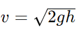

Free Mock Tests on Properties of Bulk Matter
Chapter-wise Mock Tests for NEET on 'Properties of Bulk Matter' are available in this page. Test your preparation with our free chapter wise mock tests.
-
⬥ Syllabus:
⬥ Elastic behavior, Stress-strain relationship. Hooke’s law, Young’s modulus, bulk modulus, shear, modulus of rigidity, poisson’s ratio; elastic energy.
⬥ Viscosity, Stokes’ law, terminal velocity, Reynold’s number, streamline and turbulent flow. Critical velocity, Bernoulli’s theorem and its applications.
⬥ Surface energy and surface tension, angle of contact, excess of pressure, application of surface tension ideas to drops, bubbles and capillary rise.
⬥ Heat, temperature, thermal expansion; thermal expansion of solids, liquids, and gases. Anomalous expansion. Specific heat capacity: Cp, Cv- calorimetry; change of state – latent heat.
⬥ Heat transfer- conduction and thermal conductivity, convection and radiation. Qualitative ideas of Black Body Radiation, Wein’s displacement law, and Green House effect.
⬥ Newton’s law of cooling and Stefan’s law
A brief overview on 'Properties of Bulk Matter'
-
What is Elasticity?
Elasticity refers to the property of a material that allows it to return to its original shape and size after being deformed by an external force. This ability to deform reversibly under stress and then return to its original form when the stress is removed is characteristic of elastic materials.
-
Perfectly Rigid Body:
A perfectly rigid body is an idealized concept in mechanics where the body does not deform under the action of external forces. It maintains its shape and size regardless of the applied forces.
-
Perfectly Elastic Body:
A perfectly elastic body is an ideal material that deforms reversibly under stress and regains its original shape completely when the stress is removed, without any energy loss. This ideal behavior is rarely observed in real-world materials.
-
Elasticity Limit:
The elasticity limit, also known as the elastic limit or yield point, is the maximum stress or force that a material can withstand without permanent deformation. Beyond this limit, the material undergoes plastic deformation.
-
Perfectly Inelastic Body:
A perfectly inelastic body is an idealized material that does not regain its original shape after deformation, even when the deforming force is removed. This is often seen in materials that experience permanent deformation or plastic behavior.
-
Partly Elastic Body:
A partly elastic body is a material that exhibits both elastic and plastic behavior under stress. It can deform elastically up to a certain point (elastic limit) before undergoing permanent deformation.
-
Strain:
Strain is a measure of the deformation experienced by a material under stress. It is typically expressed as the ratio of the change in size or shape of the material to its original size or shape.
-
Stress:
Stress is the force per unit area applied to a material that causes deformation. It is a measure of the internal resistance of the material to deformation and is typically expressed in units of force per unit area (such as N/m² or Pa).
-
Breaking Load:
Breaking load refers to the maximum load or force that a material can withstand before failure or fracture occurs. It is a measure of the strength of the material under tensile, compressive, or shear forces.
- Breaking Stress:
Breaking stress, also known as ultimate tensile stress or ultimate compressive stress, is the maximum stress experienced by a material just before it breaks or fails. It is a critical parameter in material strength analysis.
-
These definitions are fundamental in understanding the behavior of materials under different mechanical conditions and are essential concepts in mechanics, materials science, and engineering.
-
Hooke's Law:
Hooke's Law is a principle in physics that states the force needed to extend or compress a spring by a certain distance is directly proportional to that distance. Mathematically, it can be expressed as F = -kx, where F is the force applied, k is the spring constant (a measure of the stiffness of the spring), and x is the displacement from the spring's equilibrium position.
-
Application: Hooke's Law is applicable not only to springs but also to other elastic materials within their elastic limits. It is used in various engineering and scientific applications, such as designing springs, analyzing stress and strain in materials, and understanding the behavior of elastic systems.
-
Longitudinal Strain:
Longitudinal strain is the fractional change in length (ΔL) of a material in the direction of an applied force divided by its original length (L). Mathematically, it is expressed as ε = ΔL / L.
-
Longitudinal Stress:
Longitudinal stress is the force (F) applied per unit area (A) of a material in the direction of an applied force. It is given by σ = F / A.
-
Young's Modulus:
Young's Modulus (Y) is a measure of the stiffness or elasticity of a material when subjected to longitudinal stress. It is defined as the ratio of longitudinal stress (σ) to longitudinal strain (ε) within the elastic limit of the material. Mathematically, Young's Modulus is represented as Y = σ / ε.
Transforming Aspiration into Success
Follow us
-
Volume Strain:
Volume strain refers to the change in volume of a material per unit volume due to the application of external forces or stresses. It is calculated using the formula:
-
Volume Strain = (Change in volume / Original volume)
-
It is a dimensionless quantity and is often denoted by the symbol ϵ.
-
Volume Stress:
Volume stress is the internal force per unit area acting on the material in all directions due to external forces. It is related to volume strain through Hooke's law for isotropic materials.
-
Volume stress is typically denoted by the symbol P or σv.
-
Bulk Modulus:
Bulk modulus (K) is a measure of a material's resistance to uniform compression or volume change under an applied external force. It is defined as the ratio of the change in pressure to the fractional volume change:

Where ΔP is the change in pressure, ΔV is the change in volume, and V is the original volume of the material.
-
These concepts are fundamental in understanding how materials respond to external forces and stresses, particularly in areas such as mechanics, materials science, and engineering.
-
The force constant of a spring, often denoted by the symbol k, represents the stiffness or rigidity of the spring. It is a measure of how much force is required to stretch or compress the spring by a certain amount. Mathematically, the force constant is defined as the ratio of the force applied (F) to the resulting displacement (x) of the spring: k = (F / x)
The unit of force constant is N/m.
Hydrostatics And Atmospheric Pressure
-
What is Fluid?
A fluid is a substance that can flow and take on the shape of its container. It includes liquids and gases, which are both considered fluids because they can deform under shear stresses. Fluids exhibit properties such as viscosity, density, and compressibility.
-
Density:
Density is a physical quantity that represents the mass of a substance per unit volume. Mathematically, density (ρ) is calculated using the formula:
Density = (Mass / Volume)
The SI unit of density is kilograms per cubic meter (kg/m³), although other units like grams per cubic centimeter (g/cm³) are also commonly used.
-
Specific Gravity:
Specific gravity is a dimensionless quantity that compares the density of a substance to the density of a reference substance, typically water for liquids or air for gases, both at a specified temperature and pressure. It is often denoted by the symbol 'S'.
-
Specific Gravity: (Density of Substance / Density of Reference Substance).
- Comparison: Density vs Specific Gravity
-
Density Specific Gravity Definition The mass per unit volume of a substance. The ratio of the density of a substance to the density of a reference substance (usually water). Unit Commonly measured in kilograms per cubic meter (kg/m³) or grams per cubic centimeter (g/cm³). No unit (dimensionless). Calculation Mass divided by volume (ρ = m/V). Specific gravity = Density of substance / Density of reference substance. Reference Substance No specific reference substance; the density is an absolute measure. Usually water at 4 degrees Celsius (density of water = 1000 kg/m³ or 1 g/cm³). Applications Used in various scientific and engineering calculations, such as in fluid dynamics, materials science, and thermodynamics. Commonly used in industries like brewing, winemaking, and metallurgy to measure the concentration or purity of substances. Example The density of iron is about 7.87 g/cm³. The specific gravity of gold is typically around 19.3, meaning it is 19.3 times denser than water. -
What is pressure?
Pressure is defined as the force per unit area applied perpendicular to the surface of an object. It is a scalar quantity and is typically denoted by the symbol P. Mathematically, pressure is given by the formula:
P = (F / A)
Where: P is the pressure, F is the force applied perpendicular to the surface, and A is the area over which the force is applied.
-
The SI unit of pressure is the pascal (Pa), which is equal to one newton per square meter (N/m²). Other common units for pressure include atmospheres (atm), millimeters of mercury (mmHg), and pounds per square inch (psi).
-
Magnitude of Pressure at a Point within a Liquid:
The magnitude of pressure at a point within a liquid, without considering atmospheric pressure, can be calculated using the formula: P = ρ⋅g⋅h
-
Action of a small hole on the wall or at the bottom of a container:
When a small hole is made in the wall or at the bottom of a container filled with liquid, the liquid will flow out from the hole due to the pressure exerted by the liquid column above the hole. This flow of liquid is known as discharge.
The velocity of the liquid flowing out of a small hole in a container can be derived using Torricelli's theorem. This theore m states that the velocity v of the liquid at the hole is given by:
-

-
This equation is derived from the principle of conservation of mechanical energy, considering the potential energy of the liquid at the surface (mgh) transforming into kinetic energy at the hole (½ mv²).
The derivation involves equating the potential energy at the surface to the kinetic energy at the hole:
- mhg = ½ mv²
-
Pascal's Law:
Pascal's Law states that in a fluid at rest in a closed container, any change in pressure applied to the fluid is transmitted undiminished to all portions of the fluid and to the walls of the container. This principle is based on the fact that fluids are virtually incompressible, so any change in pressure at one point in a confined fluid will propagate throughout the entire fluid volume.
-
Mathematically, Pascal's Law can be expressed as: ΔP= (F / A)
Where: ΔP is the change in pressure, A is the area over which the force is applied.
-
Hydraulics:
Hydraulics is a branch of science and engineering that deals with the mechanical properties and use of liquids, particularly water or other fluids, in motion or at rest. It focuses on the behavior of fluids under pressure and their applications in various systems and machinery.
-
In hydraulics, Pascal's Law plays a fundamental role. According to Pascal's Law, when pressure is applied to a confined fluid, the pressure change is transmitted equally throughout the fluid in all directions. This principle is utilized in hydraulic systems to transmit force and control motion.
-
Hydraulic systems are widely used in engineering and everyday applications. They are commonly found in hydraulic machinery like cranes, excavators, hydraulic presses, and aircraft control systems. The basic components of a hydraulic system include a fluid reservoir, pump, control valves, actuators (such as cylinders or motors), and hydraulic fluid (often oil).
-
The advantages of hydraulic systems include their ability to generate high forces, smooth operation, precise control, and the flexibility to transmit power over long distances through pipes or hoses. However, they also require careful maintenance to prevent leaks and ensure optimal performance.
-
Buoyancy:
Buoyancy is the upward force exerted by a fluid (such as water or air) on an object placed in it. This force opposes the weight of the object and causes it to float or experience an apparent loss of weight when submerged in the fluid. Buoyancy is a crucial concept in fluid mechanics and plays a significant role in various real-world applications.
-
Buoyant Force:
The buoyant force is directly proportional to the volume of fluid displaced by the object. It is governed by Archimedes' principle.
Archimedes' PrincipleArchimedes' Principle is a fundamental principle in fluid mechanics, named after the ancient Greek mathematician and scientist Archimedes. It states that when a body is partially or fully submerged in a fluid (liquid or gas), it experiences an upward buoyant force equal to the weight of the fluid displaced by the body.
Fbuoyant = ρfluid × Vdisplaced × g
Where: Fbuoyant is the density of the fluid, Vdisplaced is the volume of fluid displaced by the object.
The buoyant force allows objects with lower density than the fluid to float, while objects with higher density sink. It is why ships and boats float on water, balloons rise in air, and submarines can control their depth by adjusting their buoyancy.
-
Why floating body has no apparent weight?
A floating body appears to have no weight when it is in equilibrium with the fluid it is floating in. This phenomenon occurs due to the balance of forces acting on the body, particularly the buoyant force and the gravitational force.
When an object is partially or fully submerged in a fluid, it displaces an amount of fluid equal to its own weight. According to Archimedes' Principle, the buoyant force acting on the object is equal to the weight of the displaced fluid. This buoyant force acts in the opposite direction to gravity.
If the buoyant force is equal to the weight of the object, the object will float without sinking or rising. In this state of equilibrium, the apparent weight of the floating body is effectively zero because the buoyant force counteracts the gravitational force.
It's important to note that the apparent weightlessness of a floating body is a result of the balance of forces and the specific conditions of buoyancy. If the object's density is adjusted or the fluid's density changes, the equilibrium and apparent weightlessness may no longer hold.
-
Neutral Equilibrium:
In this case, a small displacement of the body does not change its equilibrium state. The body remains in its new position without experiencing any restoring force. An example is a symmetrically shaped object floating in water.
-
Stable Equilibrium:
When a floating body is in stable equilibrium, a small displacement from its equilibrium position results in a restoring force that brings it back to its original position. This is like a bowl floating in water; if you push it down, it returns to its initial position.
-
Unstable Equilibrium:
An unstable equilibrium occurs when a small displacement causes the body to move further away from its original position. There is no restoring force that brings it back to equilibrium. Imagine a pencil floating vertically in water; a slight tilt causes it to topple over.
-
Torricelli's experiment:
Torricelli's experiment demonstrated the principles of fluid dynamics, particularly regarding the flow of liquids and gases. He filled a long glass tube closed at one end with mercury and inverted it into a dish of mercury. As a result, some mercury remained in the tube, creating a vacuum above it. This experiment led to the discovery of atmospheric pressure and contributed to the development of barometers.
Viscosity and Surface tension
-
Laminar Flow:
Laminar flow is a type of fluid motion characterized by smooth and orderly movement of fluid particles in parallel layers or streams. In laminar flow, adjacent layers of fluid move past each other in a regular and predictable manner without significant mixing or disruption. This type of flow is typically observed at low fluid velocities, in narrow channels or pipes, or under conditions of steady and uniform flow. Laminar flow is characterized by low fluid velocity, high viscosity, and the absence of turbulence.
- Turbulent Flow:
Turbulent flow is a type of fluid motion characterized by chaotic and irregular movement of fluid particles. In turbulent flow, fluid particles mix vigorously and exhibit random movements in all directions, leading to eddies, swirls, fluctuations in velocity, and pressure variations. This type of flow is typically observed at high fluid velocities, in wide open spaces, or in the presence of obstacles or disturbances that disrupt the flow. Turbulent flow is characterized by high fluid velocity, low viscosity, and the presence of turbulence, which results in increased friction, energy loss, and mixing of fluid particles.
-
Comparison: Laminar Flow vs Turbulent Flow
Laminar Flow Turbulent Flow Definition A smooth and orderly flow of fluid with parallel layers. A chaotic and irregular flow of fluid with unpredictable fluctuations. Reynolds Number Re < 2000 (typically) Re > 4000 (typically) Velocity Profile Velocity profile remains constant along the flow direction. Velocity profile fluctuates and exhibits eddies and vortices. Energy Loss Less energy loss due to smooth flow. Higher energy loss due to chaotic motion and mixing. Heat Transfer Efficient heat transfer due to uniform flow. Enhanced heat transfer due to increased mixing and turbulence. Applications Used in precise fluid control systems, microfluidics, and low-speed flows. Common in high-speed flows, industrial processes, and natural phenomena like rivers and oceans. Example Flow inside a smooth pipe at low velocities. Turbulence behind an obstacle or in strong winds. -
What is Viscosity?
Viscosity refers to the resistance of a fluid to flow. It's a measure of how easily a fluid can deform or move. Higher viscosity means the fluid is thicker and flows more slowly, like honey or molasses. Lower viscosity indicates a thinner fluid that flows more easily, like water or air.
-
Coefficient of Viscosity:
The coefficient of viscosity, denoted by η, is a measure of the internal friction within a fluid. It quantifies the resistance of a fluid to deformation or flow. High viscosity fluids have a higher coefficient of viscosity, indicating stronger internal friction and slower flow rates, while low viscosity fluids have a lower coefficient of viscosity, allowing for easier deformation and faster flow.
-
Unit and dimension of viscosity:
The unit of viscosity depends on the system of units being used. In the SI system, the unit of viscosity is the Pascal-second (Pa·s) or the centipoise (cP). The dimensions of viscosity are [ML-1T-1], which represent mass per unit length per unit time.
-
Critical Velocity and Reynolds Number:
Critical Velocity refers to the minimum velocity required for a fluid to flow steadily through a pipe or channel without turbulent flow. It is influenced by factors like the diameter of the pipe, viscosity of the fluid, and density. Reynolds Number (Re) is a dimensionless quantity used in fluid mechanics to predict flow patterns in different fluid flow situations. It's calculated using the formula:
Re = (ρ⋅v⋅L) / μ
Where: ρ is the density of the fluid, v is the velocity of the fluid relative to the object, L is a characteristic linear dimension (like the diameter of a pipe), and μ is the dynamic viscosity of the fluid.
-
Bernoulli's Theorem:
Bernoulli's theorem, a fundamental principle in fluid dynamics, states that in a streamline flow of an incompressible and non-viscous fluid, the sum of the pressure energy, kinetic energy, and potential energy per unit volume remains constant along any streamline.
Mathematically, Bernoulli's theorem can be expressed as:
P + ½.pv² + ρgh = constant
-
What is surface tension of a liquid?
Surface tension is a property of liquids that arises from the cohesive forces between molecules at the surface of the liquid. It is defined as the amount of energy required to increase the surface area of a liquid by a unit amount. In simpler terms, it's the force per unit length acting perpendicular to the surface of the liquid, tending to minimize the surface area.
-
What is Surface energy?
Surface energy, also known as surface free energy, is a measure of the energy required to create or expose a unit area of a material's surface. It arises due to the imbalance of cohesive forces between molecules on the surface of a material compared to those in the bulk.
-
What is Capillarity?
Capillarity refers to the phenomenon where liquids in small tubes or narrow spaces rise or fall against gravity. It occurs due to the combination of adhesive and cohesive forces between the liquid and the surface of the tube or material. In capillary action, the liquid is drawn upward in narrow tubes or porous materials, such as soil or paper towels.
Thermometry
-
Thermometry is the science and practice of measuring temperature. It involves the use of thermometers, devices designed to quantify thermal energy or the degree of hotness or coldness of a substance or object. Thermometry plays a crucial role in various fields, including physics, chemistry, engineering, meteorology, and medicine, where precise temperature measurements are essential for understanding processes, conducting experiments, and monitoring systems.
-
What is Thermal Equilibrium?
Thermal equilibrium is a state in which two or more objects or systems have reached the same temperature and no longer experience a net exchange of heat energy. In this state, the thermal properties of the objects or systems, such as temperature, remain constant over time. Thermal equilibrium is a fundamental concept in thermodynamics and is essential for understanding heat transfer processes and the behavior of systems in thermal contact with each other.
-
The Zeroth Law of Thermodynamics:
The Zeroth Law of Thermodynamics states that if two systems are in thermal equilibrium with a third system, then they are also in thermal equilibrium with each other. In simpler terms, it establishes the concept of temperature and provides a basis for measuring temperature objectively. This law is fundamental in understanding the behavior of thermodynamic systems and forms the basis for constructing temperature scales.
-
What is heat?
Heat is a form of energy that is transferred between two substances due to a temperature difference. It flows from a region of higher temperature to a region of lower temperature until thermal equilibrium is reached, where the temperatures become equal. Heat transfer can occur through conduction, convection, or radiation, and it is essential for processes like cooking, heating, and thermal regulation in living organisms.
-
What is Thermal Equilibrium?
Thermal equilibrium is a state in which two or more objects or systems in contact with each other have the same temperature. In thermal equilibrium, there is no net transfer of heat between the objects because they have reached a balance where the rates of heat transfer in both directions are equal.
Expansion of Solids and Liquids:
-
When solids and liquids are subjected to changes in temperature, they undergo thermal expansion. This expansion occurs because the particles within the substance gain kinetic energy with increased temperature, leading to increased spacing between particles and an overall increase in volume or dimensions.
-
Coefficient of Linear Expansion (α):
This coefficient measures the relative change in length (linear dimension) per unit change in temperature. It is denoted by α and has units of per degree Celsius (°C)^(-1) or per Kelvin (K)^(-1). Mathematically, α = ΔL / (L * ΔT), where ΔL is the change in length, L is the initial length, and ΔT is the change in temperature.
-
Coefficient of Surface Expansion (β):
This coefficient relates to the change in area (surface dimension) per unit change in temperature. It is denoted by β and has units of per degree Celsius (°C)^(-1) or per Kelvin (K)^(-1). The formula for β is β = ΔA / (A * ΔT), where ΔA is the change in area, A is the initial area, and ΔT is the change in temperature.
-
Coefficient of Volume Expansion (γ):
This coefficient quantifies the relative change in volume per unit change in temperature. It is denoted by γ and has units of per degree Celsius (°C)^(-1) or per Kelvin (K)^(-1). The formula for γ is γ = ΔV / (V * ΔT), where ΔV is the change in volume, V is the initial volume, and ΔT is the change in temperature.
-
The Anomalous Expansion of Water:
The anomalous expansion of water refers to its unique behavior regarding volume changes with temperature. Unlike most substances, which contract when cooled and expand when heated, water exhibits an anomalous expansion pattern:
Below 4°C: water expands when cooled down, exhibiting anomalous expansion contrary to the behavior of most substances.
At 4°C: Water reaches its maximum density, meaning its volume is at its minimum for a given mass. This is why ice forms on the surface of bodies of water, as colder water (below 4°C) is less dense and floats on top.
Above 4°C: Water starts to expand again as it is heated further, contrary to the typical behavior of liquids.
Expansion of Gases
-
Boyle's Law
Boyle's Law states that the pressure of a given amount of gas is inversely proportional to its volume at constant temperature. In mathematical terms, it can be expressed as P∝ (1 / V) , where P is the pressure of the gas and V is its volume.
-
Charles's Law:
Charles's Law states that the volume of a given amount of gas is directly proportional to its absolute temperature at constant pressure. Mathematically, it can be expressed as V∝T, where V is the volume of the gas and T is its absolute temperature measured in Kelvin.
Calorimetry
-
Calorimetry is a branch of science that deals with the measurement of heat changes in physical and chemical processes. It involves using calorimeters to quantify the amount of heat transferred during a reaction or a physical change.
-
Units of heat:
The unit of heat in the International System of Units (SI) is the joule (J). However, in some contexts, the calorie (cal) and kilocalorie (kcal) are also used, especially in the field of nutrition and dietetics.
-
Specific Heat or Specific Heat Capacity:
The specific heat capacity, often referred to simply as specific heat, is the amount of heat required to raise the temperature of a unit mass of a substance by one degree Celsius (or one Kelvin). It is denoted by the symbol s and has units of joules per kilogram per degree Celsius (J/kg°C) or calories per gram per degree Celsius (cal/g°C).
-
Heat Capacity:
Heat Capacity is a measure of the amount of heat energy required to raise the temperature of a substance by a certain amount. It is denoted by the symbol 'C' and is expressed in units of joules per degree Celsius (J/°C) or calories per degree Celsius (cal/°C).
-
The water equivalent:
The water equivalent of a substance is the mass of water that would absorb or release the same amount of heat as the substance when its temperature changes by a certain amount. It is denoted by the symbol 'W' and is used in calorimetry calculations.
Important questions for NEET Aspirants
- 1. Define elasticity and explain Hooke's Law.
- 2. What is Young's modulus? How is it related to stress and strain?
- 3. Differentiate between elastic and plastic deformation.
- 4. Define Poisson's ratio and explain its significance in materials.
- 5. What is the relationship between stress and strain for a perfectly elastic material?
- 6. Explain the concept of bulk modulus and its significance.
- 7. Define the term 'viscosity' and explain its units.
- 8. Differentiate between dynamic viscosity and kinematic viscosity.
- 9. What is the Reynolds number? How does it affect fluid flow?
- 10. Explain the concept of surface tension and give examples of its applications.
- 11. Define thermal expansion and discuss its types.
- 12. What is the coefficient of linear expansion? How is it measured?
- 13. Explain the concept of specific heat capacity and its significance.
- 14. Define latent heat and discuss its importance in phase transitions.
- 15. Explain the process of calorimetry and its applications.
- 16. Discuss the phenomenon of anomalous expansion of water.
- 17. Define Boyle's Law and state it mathematically.
- 18. Explain Charles's Law and its implications on gases.
- 19. Discuss Gay-Lussac's Law and its relationship with pressure and temperature.
- 20. What is Avogadro's Law? How is it related to the ideal gas equation?
- 21. Define hydrostatics and discuss Pascal's Law.
- 22. Explain Archimedes' Principle and its applications.
- 23. Define atmospheric pressure and explain how it varies with altitude.
- 24. Discuss the working principle of a barometer.
- 25. What is a manometer? How is it used to measure pressure?
- 26. Define viscosity and discuss its effects on fluid flow.
- 27. Explain the concept of streamline flow and turbulent flow.
- 28. What is Bernoulli's theorem? How is it applied in fluid dynamics?
- 29. Define surface tension and discuss its role in capillary action.
- 30. Explain the working principle of a capillary tube.
- 31. Define thermometry and discuss different temperature scales.
- 32. Explain the working principle of a mercury thermometer.
- 33. Define expansion of solids and discuss its implications.
- 34. What is the coefficient of volume expansion? How is it calculated?
- 35. Discuss the expansion of liquids with temperature.
- 36. Define the coefficient of compressibility and its significance.
- 37. Explain the process of phase transition and latent heat.
- 38. Discuss the concept of specific latent heat and its units.
- 39. Define the triple point of a substance.
- 40. Explain the concept of calorimetry and its applications in measuring heat.
- 41. What is a calorimeter? How is it used to measure specific heat capacity?
- 42. Define the latent heat of fusion and vaporization.
- 43. Explain the Clausius-Clapeyron equation and its significance.
- 44. Discuss the expansion of gases with temperature and pressure.
- 45. Define the ideal gas law and discuss its assumptions.
- 46. Explain the Van der Waals equation and its modifications for real gases.
- 47. Discuss the critical temperature and pressure of a gas.
- 48. Define adiabatic and isothermal processes in thermodynamics.
- 49. Discuss the concept of heat engines and their efficiency.
- 50. Define entropy and discuss its role in thermodynamics.
Some Important Tips for NEET Aspirants
- Understand Concepts: Focus on understanding the concepts of elasticity, hydrostatics, viscosity, surface tension, thermometry, expansion of solids, liquids, and gases, calorimetry, and change of state.
- Practice Numerical Problems: Solve numerical problems related to these topics to strengthen your understanding and problem-solving skills.
- Use Diagrams: Utilize diagrams and visual aids to understand complex concepts like the behavior of fluids, thermal expansion, and phase transitions.
- Memorize Formulas: Memorize important formulas such as Boyle's Law, Charles's Law, specific heat capacity, latent heat, and others to solve problems efficiently.
- Apply Concepts: Apply the concepts learned to real-world scenarios to enhance your understanding and practical knowledge.
- Practice Previous Year Papers: Solve previous year NEET question papers to familiarize yourself with the exam pattern and types of questions asked.
- Time Management: Manage your time effectively during the exam by practicing time-bound mock tests and focusing on your strengths and weaknesses.
- Stay Updated: Keep yourself updated with the latest developments and advancements in the field of physics related to bulk matter properties.
- Seek Clarifications: Don't hesitate to seek clarifications from teachers or online resources if you have doubts or need further explanations.
- Stay Healthy: Maintain a healthy lifestyle with proper nutrition, exercise, and adequate rest to stay focused and perform well in exams.